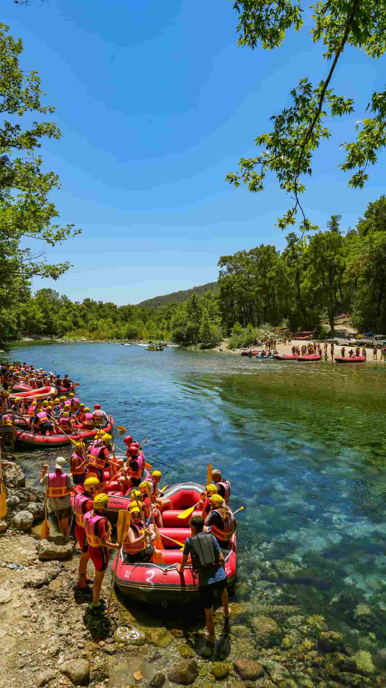
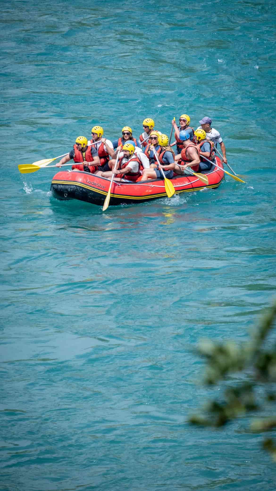
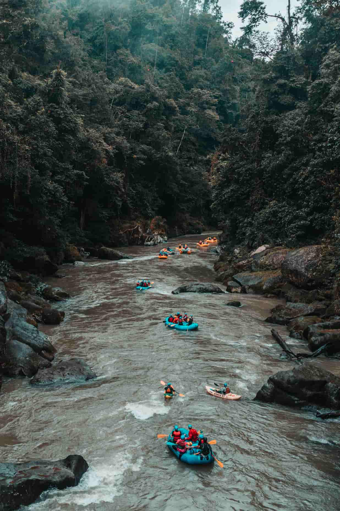

Our Rafting Trips!
Find the perfect adventure for you!

San Pedro River - The Scenic Escape (Begginer)
Immerse yourself in a breathtaking landscape where crystal-clear turquoise waters wind through a vibrant, lush forest. This trip is all about soaking in the natural beauty of the region. You will glide past spectacular rocky shores and enjoy a perfect balance of calm, relaxing stretches and gentle, fun splashes.
Time: 3 Hours
Price $35,000
Contact Us
Trancura River - The Adrenaline Rush (Intermediate)
Gear up for a high-energy challenge on one of the most iconic rafting routes! This exciting journey puts your teamwork to the test as you charge through powerful, roaring rapids and navigate thrilling wave trains. Feel the cold spray of the river and the unmatched rush of conquering nature's ultimate obstacle course.
Time: 4 hours
Price $50,000
Contact Us
Futaleufú River - The Wild Canyon (Extreme)
Journey deep into a dramatic, towering canyon carved by ancient waters. This run offers an intense, world-class whitewater experience surrounded by deep wilderness and mist-shrouded forests. Navigating these roaring, technical rapids is a powerful reminder of the raw majesty of the river.
Time: 6 hours
Price $85,000
Contact Us| River / Destination | Duration | Difficulty | Price |
|---|---|---|---|
| San Pedro River | 3 Hours | Easy (Class II) | $35,000 |
| Trancura River | 4 Hours | Medium (Class III-IV) | $50,000 |
| Maipo River | 3.5 Hours | Medium (Class III) | $42,000 |
| Futaleufu River | 6 Hours | Expert (Class V) | $85,000 |
| Baker River | 5 Hours | Advanced (Class IV) | $75,000 |